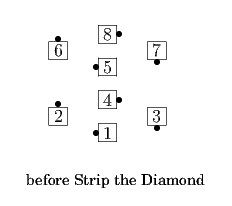
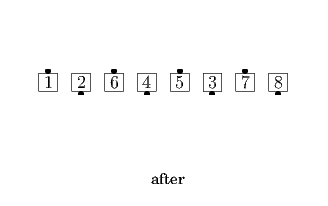
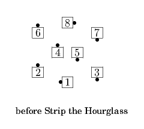
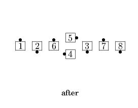

From Twin Diamonds or an Hourglass: Outside four 1/2 Zoom and Trade as the Very Centers Cast Off 3/4 as the Other Center (on the outside) Counter Rotate 1/4 to end as the Very Outside dancer. Strip The Diamond ends in a Tidal Line. Strip the Hourglass ends in two Lines of 3 with a perpendicular Mini-Wave between them.




© Copyright 2004-2017 Vic Ceder and CALLERLAB Inc., The International Association of Square Dance Callers. Permission to reprint, republish, and create derivative works without royalty is hereby granted, provided this notice appears. Publication on the Internet of derivative works without royalty is hereby granted provided this notice appears. Permission to quote parts or all of this document without royalty is hereby granted, provided this notice is included. Information contained herein shall not be changed nor revised in any derivation or publication.